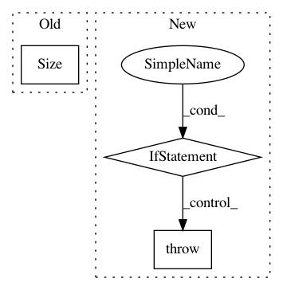

161ae41bebc73c146627169f761e3c4ddf83e5d4,pixyz/losses/losses.py,Expectation,__init__,#Expectation#Any#Any#Any#Any#Any#,745
Before Change
super().__init__(input_var=input_var)
self.p = p
self.f = f
self.sample_shape = torch.Size(sample_shape)
self.reparam = reparam
@property
def _symbol(self):
After Change
class Loss(torch.nn.Module, metaclass=abc.ABCMeta):
Loss class. In Pixyz, all loss classes are required to inherit this class.
Examples
--------
>>> import torch
>>> from torch.nn import functional as F
>>> from pixyz.distributions import Bernoulli, Normal
>>> from pixyz.losses import KullbackLeibler
...
>>> // Set distributions
>>> class Inference(Normal):
... def __init__(self):
... super().__init__(cond_var=["x"], var=["z"], name="q")
... self.model_loc = torch.nn.Linear(128, 64)
In pattern: SUPERPATTERN
Frequency: 3
Non-data size: 3
Instances
Project Name: masa-su/pixyz
Commit Name: 161ae41bebc73c146627169f761e3c4ddf83e5d4
Time: 2020-10-26
Author: kaneko@weblab.t.u-tokyo.ac.jp
File Name: pixyz/losses/losses.py
Class Name: Expectation
Method Name: __init__
Project Name: cornellius-gp/gpytorch
Commit Name: 979b8c9efa551e8c948a4aca145367a2d87ac8d6
Time: 2019-02-26
Author: balandat@fb.com
File Name: gpytorch/distributions/multitask_multivariate_normal.py
Class Name: MultitaskMultivariateNormal
Method Name: rsample
Project Name: cornellius-gp/gpytorch
Commit Name: 38d2e5d371634bb7b15bbd12285ca055207656b7
Time: 2018-09-30
Author: balandat@fb.com
File Name: gpytorch/priors/lkj_prior.py
Class Name: LKJCovariancePrior
Method Name: __init__